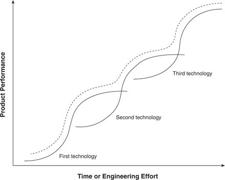
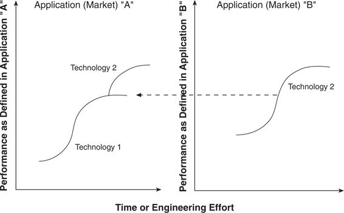

The technology S-curve forms the centerpiece of thinking about technology strategy. It suggests that the magnitude of a product’s performance improvement in a given time period or due to a given amount of engineering effort is likely to differ as technologies mature. The theory posits that in the early stages of a technology, the rate of progress in performance will be relatively slow. As the technology becomes better understood, controlled, and diffused, the rate of technological improvement will accelerate. 12 But in its mature stages, the technology will asymptotically approach a natural or physical limit such that ever greater periods of time or inputs of engineering effort will be required to achieve improvements. Figure 2.5 illustrates the resulting pattern.
Many scholars have asserted that the essence of strategic technology management is to identify when the point of inflection on the present technology’s S-curve has been passed, and to identify and develop whatever successor technology rising from below will eventually supplant the present approach. Hence, as depicted by the dotted curve in Figure 2.5, the challenge is to successfully switch technologies at the point where S-curves of old and new intersect. The inability to anticipate new technologies threatening from below and to switch to them in a timely way has often been cited as the cause of failure of established firms and as the source of advantage for entrant or attacking firms. 13
How do the concepts of S-curves and of value networks relate to each other? 14 The typical framework of intersecting S-curves illustrated in Figure 2.5 is a conceptualization of sustaining technological changes within a single value network, where the vertical axis charts a single measure of product performance (or a rank-ordering of attributes). Note its similarity to Figure 1.4, which measured the sustaining impact of new recording head technologies on the recording density of disk drives. Incremental improvements within each technology drove improvements along each of the individual curves, while movement to new head technologies involved a more radical leap. Recall that there was not a single example in the history of technological innovation in the disk drive industry of an entrant firm leading the industry or securing a viable market position with a sustaining innovation. In every instance, the firms that anticipated the eventual flattening of the current technology and that led in identifying, developing, and implementing the new technology that sustained the overall pace of progress were the leading practitioners of the prior technology. These firms often incurred enormous financial risks, committing to new technologies a decade or more in advance and wiping out substantial bases of assets and skills. Yet despite these challenges, managers of the industry’s established firms navigated the dotted line course shown in Figure 2.5 with remarkable, consistent agility.
Figure 2.5 The Conventional Technology S-Curve

Source: Clayton M. Christensen, “Exploring the Limits of the Technology S-Curve. Part I: Component Technologies,” Production and Operations Management 1, no. 4 (Fall 1992): 340. Reprinted by permission.
A disruptive innovation, however, cannot be plotted in a figure such as 2.5, because the vertical axis for a disruptive innovation, by definition, must measure different attributes of performance than those relevant in established value networks. Because a disruptive technology gets its commercial start in emerging value networks before invading established networks, an S-curve framework such as that in Figure 2.6 is needed to describe it. Disruptive technologies emerge and progress on their own, uniquely defined trajectories, in a home value network. If and when they progress to the point that they can satisfy the level and nature of performance demanded in another value network, the disruptive technology can then invade it, knocking out the established technology and its established practitioners, with stunning speed.
Figures 2.5 and 2.6 illustrate clearly the innovator’s dilemma that precipitates the failure of leading firms. In disk drives (and in the other industries covered later in this book), prescriptions such as increased investments in R&D; longer investment and planning horizons; technology scanning, forecasting, and mapping; as well as research consortia and joint ventures are all relevant to the challenges posed by the sustaining innovations whose ideal pattern is depicted in Figure 2.5. Indeed, the evidence suggests that many of the best established firms have applied these remedies and that they can work when managed well in treating sustaining technologies. But none of these solutions addresses the situation in Figure 2.6, because it represents a threat of a fundamentally different nature.
Figure 2.6 Disruptive Technology S-Curve

Source: Clayton M. Christensen, “Exploring the Limits of the Technology S-Curve. Part I: Component Technologies,” Production and Operations Management 1, no. 4 (Fall 1992): 361. Reprinted by permission.